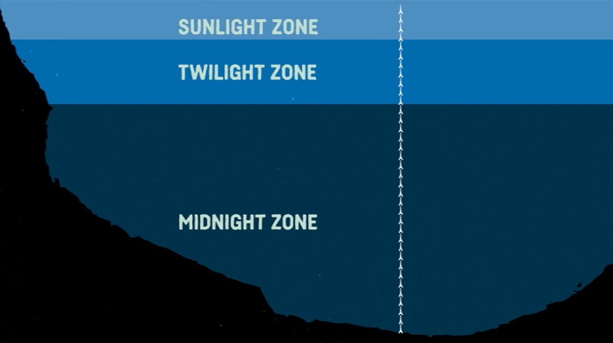
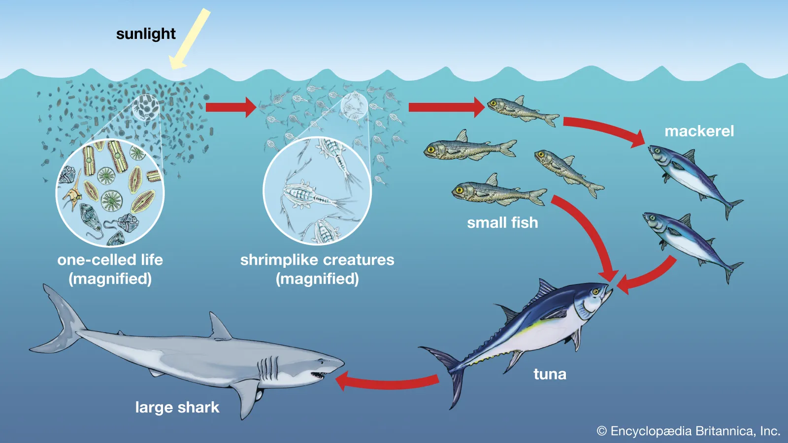
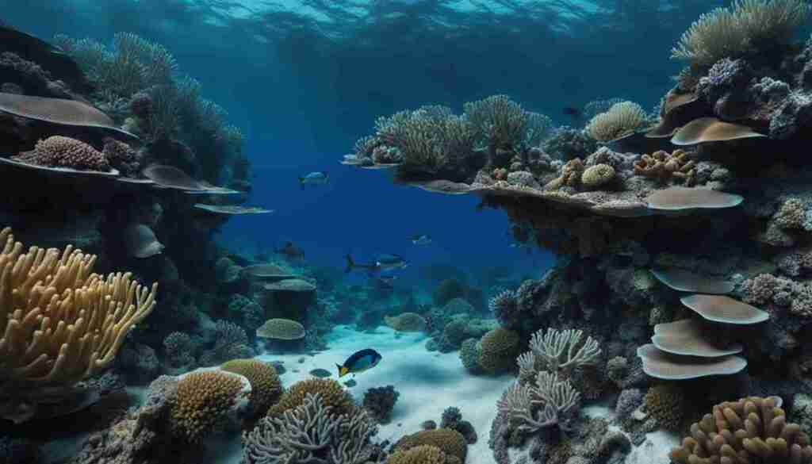
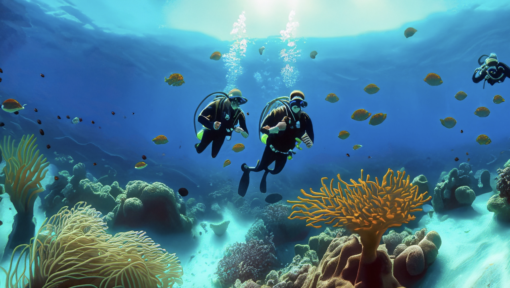

Mysterious Deep-Sea Creatures
Mysterious deep-sea creatures are bizarre and fascinating marine animals that live in the ocean's darkest depths. They often have unique adaptations like bioluminescence, translucent bodies, and unusual shapes to survive in extreme conditions.

The Twilight and Midnight Zones
The Twilight Zone (200-1000m deep) is a dimly lit part of the ocean where some light reaches but not enough for photosynthesis. The Midnight Zone (1000-4000m deep) is completely dark, with extreme pressure and cold temperatures, home to bioluminescent and deep-sea creatures.
Extreme Survival Adaptations
Extreme survival adaptations are special traits that help animals survive in harsh environments. These can include features like enhanced senses, the ability to withstand extreme temperatures or pressures, and unique ways of finding food, such as bioluminescence or camouflage.
Deep-Sea Ecosystems and Their Importance
Deep-sea ecosystems are unique habitats found in the ocean's depths, home to a variety of specialized creatures. They play a crucial role in regulating Earth's climate, recycling nutrients, and supporting biodiversity, making them essential for the health of the planet.
Human Exploration and Conservation Efforts
Human exploration of the deep sea involves using advanced technology like submersibles and remote sensors to study underwater life and ecosystems. Conservation efforts aim to protect these fragile environments from pollution, overfishing, and climate change, ensuring their long-term survival.
